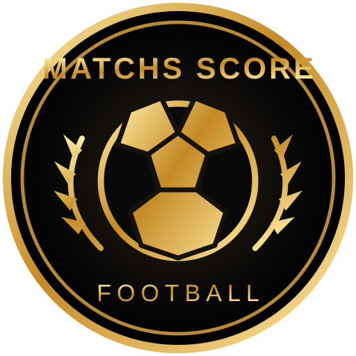

Forme récente
Comparer les derniers résultats, les buts marqués et encaissés, ainsi que les performances à domicile et à l'extérieur.

MATCHS SCORELes rencontres de Ligue des champions de la date sélectionnée seront affichées ici.
Chargement des matchs…
Chargement des rencontres…
Choisis une date pour voir les matchs.
FOOTBALL • SCORES • ANALYSES
Retrouve les rencontres, les résultats et des analyses présentées clairement. Une plateforme pour suivre le football avec méthode et responsabilité.
Les données sont mises à jour automatiquement lorsque la source est disponible. Les horaires sont affichés à l'heure du Cameroun.
La qualité d'un pronostic dépend des informations disponibles au moment de l'analyse.
CALENDRIER & RÉSULTATS
Chargement des rencontres…
Chargement des matchs de football…
Les scores et statuts dépendent des données transmises par le fournisseur. Une rencontre peut ne pas apparaître si elle n'est pas couverte par la source.
LES DERNIERS RÉSULTATS
Les derniers scores seront affichés ici après les rencontres.
DERNIÈRES INFORMATIONS
Chargement des actualités…
Chargement des dernières actualités…
Les titres et résumés proviennent des médias sources. Ouvre un article pour lire le contenu original.
TABLEAUX DES LIGUES
Chargement des classements…
| # | Club | J | G | N | P | BP | BC | Pts |
|---|---|---|---|---|---|---|---|---|
| Chargement… | ||||||||
STATISTIQUES INDIVIDUELLES
Chargement des meilleurs buteurs…
| # | Joueur | Club | MJ | Buts | Pen. |
|---|---|---|---|---|---|
| Chargement… | |||||
Classement fourni par football-data.org. La disponibilité dépend des compétitions couvertes par ton abonnement API.
SÉLECTION & ANALYSE
Chargement des analyses statistiques…
Préparation des analyses…
Les probabilités sont calculées à partir des résultats récents disponibles. Elles ne tiennent pas compte de toutes les absences, compositions ou actualités. Elles ne garantissent aucun résultat.
NOTRE APPROCHE
Comparer les derniers résultats, les buts marqués et encaissés, ainsi que les performances à domicile et à l'extérieur.
Vérifier les absences, la motivation, le calendrier, les confrontations et les informations d'avant-match.
Éviter les mises excessives. Un pronostic reste incertain, même lorsque l'analyse semble solide.
ESPACE PARTENAIRE
Entre ce code lors de ton inscription sur MelBet si les conditions de l'offre le permettent.
Vérifie les conditions, l'éligibilité et les règles applicables au Cameroun directement auprès de MelBet.
Le lien d'inscription affilié personnalisé sera ajouté dès qu'il sera confirmé. N'utilise que le lien officiel communiqué par le partenaire.
À PROPOS
Un espace consacré au football, aux résultats et à l'analyse des rencontres. Notre objectif : présenter les informations avec clarté, sans vendre de certitudes.
Explorer les matchs